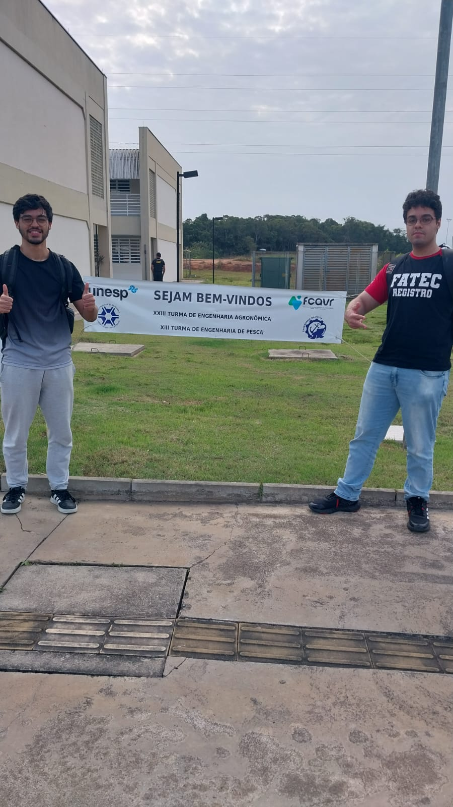
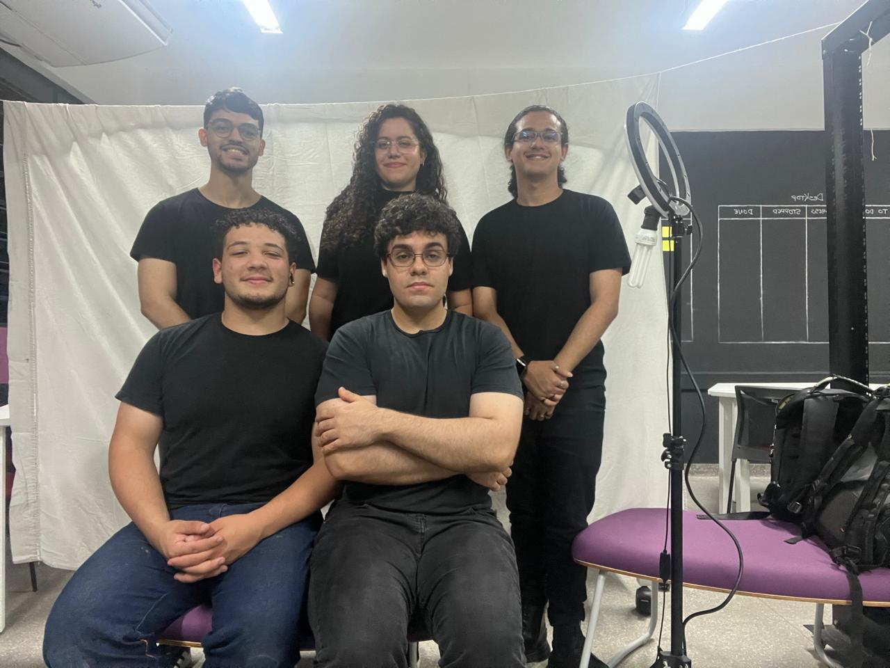
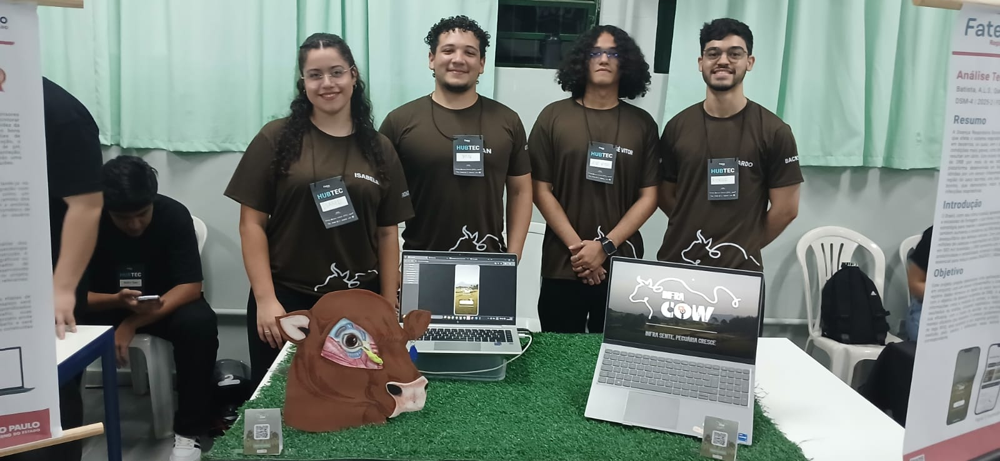
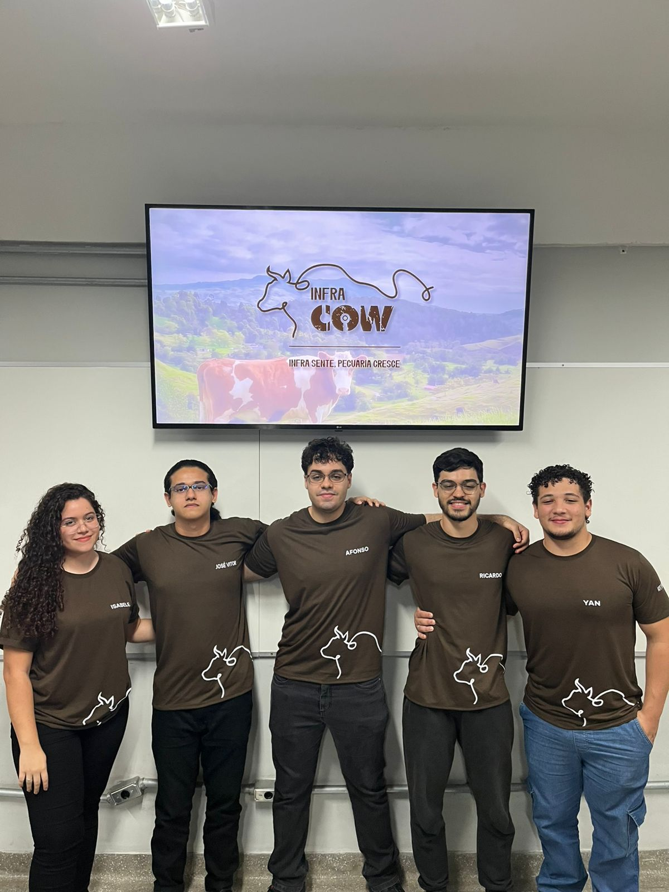
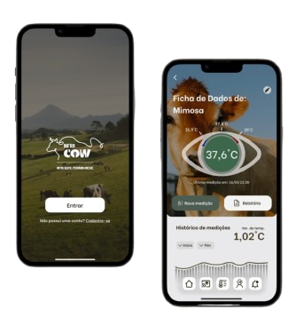
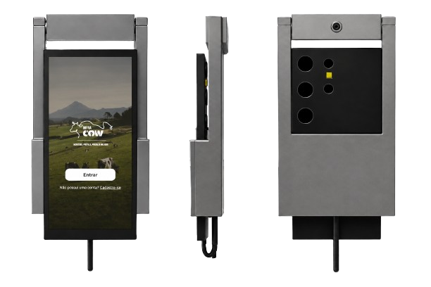
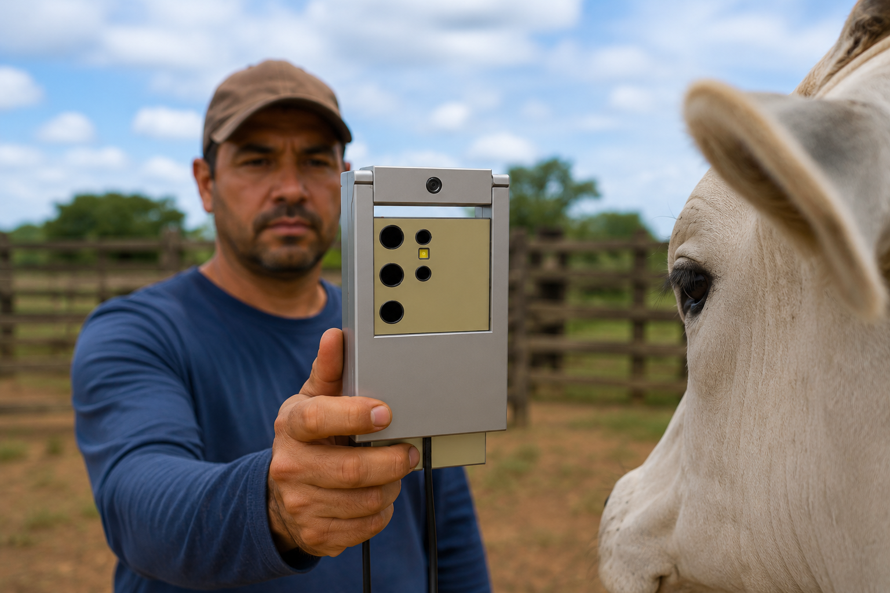

Sobre Nós
Somos a equipe TWtechnologies , um grupo composto por cinco estudantes da FATEC de Registro, no curso de Desenvolvimento de Software Multiplataforma, e estamos unidos pelo desafio de um projeto acadêmico.
Nossa equipe foi formada com o objetivo de explorar, desenvolver e implementar soluções eficazes e criativas que possam fazer a diferença na vida das pessoas.
Nossa missão é desenvolver projetos inovadores que resolvam problemas reais, aplicando o conhecimento acadêmico de forma prática e colaborativa. Visamos criar soluções que não apenas cumpram os requisitos acadêmicos, mas que também tenham potencial para transformar positivamente a sociedade.
Equipe
Afonso Luiz Soares Batista
Squad Leader & DevOps
Isabele Letícia G. Queiroz
Front-end & Creative Design
Yan Gabriel de O. Albuquerque
IOT Developer
José Vitor Ferro Teixeira
Writter
Ricardo Alexandre Franca Davis
Back-end
Nossos Momentos
Construímos soluções em equipe.




Projeto
Este projeto, chamado InfraCow, propõe desenvolver uma aplicação mobile que, em conjunto com um sensor termográfico infravermelho, registre dados térmicos da região do saco lacrimal dos bovinos, com o objetivo de detectar suspeitas de Doença Respiratória Bovina (DRB). A aplicação incluirá informações como a medição do animal, a data da captura e os resultados da análise, utilizando estatística médica para validar sua eficácia, com o intuito de auxiliar no pré-diagnóstico e no manejo eficiente dos rebanhos. O sensor será acoplado a um suporte portátil, facilitando a medição pelo usuário e atribuindo essa leitura ao bovino correspondente por meio da tecnologia NFC presente nos próprios smartphones, utilizada para leitura dos brincos RFID dos animais. A aplicação fará a coleta das informações fornecidas pelo sensor, vinculando-as aos dados previamente cadastrados pelo proprietário do rebanho, promovendo um reconhecimento assertivo e ágil de possíveis variações térmicas nos animais. Para alcançar esse objetivo geral, foram definidos os seguintes objetivos específicos:
- Especificar a amostragem de dados da IA para a base de DRB;
- Aumentar a eficácia das produções derivadas de bovinos;
- Elevar a saúde e o tratamento precoce dos animais afetados por DRBs.



